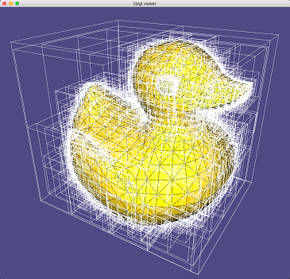

Bounding volumes
Bounding volumes are used to represent more complex objects. Only if the simple bounding volumes collide are tests performed on the more complex geometry.
Basic primitive tests
Shapes:
- Lines
- Rays
- Segments
- Planes
- Triangles
- Polygons
- Spheres
- Boxes
- Cyliners
- Polyhedra
Both static and moving.
Hierarchies

Spatial partitioning
Splitting objects of a world or scene up for efficient traversal and comparison. Avoids worst case quadratic behaviour.
BSP tree hierarchies
A type of spatial partitioning. Can be used for both BVH and SP.
Implicit objects
Implicit objects aren't defined by vertices, edges, faces etc. but by a mathematical function. Things like spheres.
Often by a function of the form where points given by constitute the interior of the shape and 0 the boundary. A boundary defined by an implicit shape is called an implicit boundary. Implicit objects can be used as approximations of scene objects because they allow for fast intersection tests as the boundary is already known or can be quickly computed. Especially useful with lines and rays.
CSG objects
A constructive solid geometry object is defined as a binary tree with set-theoretic operations given in the internal nodes, such as difference and union. Vertices are not directly available.
Data source of geometry
Reasons to have a separate set of geometry on which collision detection is performed:
- The rendering geometry is too complex.
- Index buffers don't lend themselves well to collision detection.
- Rendering geometry and collision geometry have different concerns and data storage. Better cache coherency.
- Sometimes rendering geometry differs by design (e.g. snow/ground).
- Collision data might need to be kept around even when the rendering geometry isn't visible.
Drawbacks:
- Data duplication.
- Might take time to create the geometry (human time).
- If built separately, the geometries may mismatch in places.
Specialised collision detection algorithms
Particle systems might be better served by processing particles as a group rather than individually.
Object-object and object-scene collisions might differ because other objects might be fast moving. A scene is static so more assumptions can be made.
It is virtually always preferable to subtract the motion of one object from the other object, so that one object is stationary. A swept volume test becomes an exact intersection test.
In some games, a swept volume is replaced by a speedbox which is an elongated volume covering the entire range of motion.